Feel the HALO クッションクレンジング 使い方
タイプ別メイクの
落とし方
loading
オーラをまとう輝く人に。
基本の使い方
STEP
1
缶をよく降ったあと、
缶を立てた状態で泡を出します。
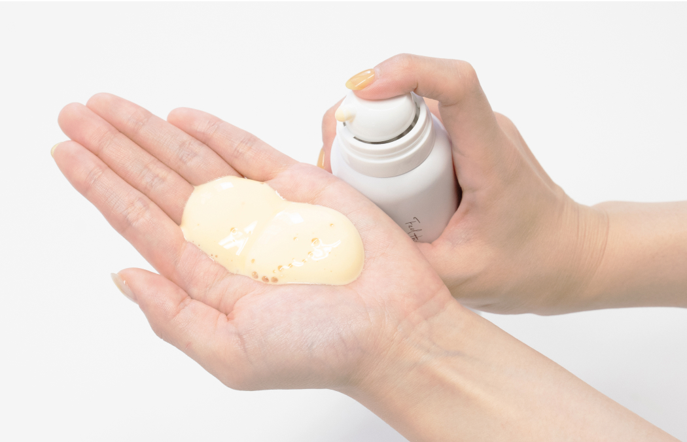
ウォータープルーフ、お風呂、マツエク、オールOK
POINT
STEP
2
優しくマッサージするように、
泡を顔全体に馴染ませます。
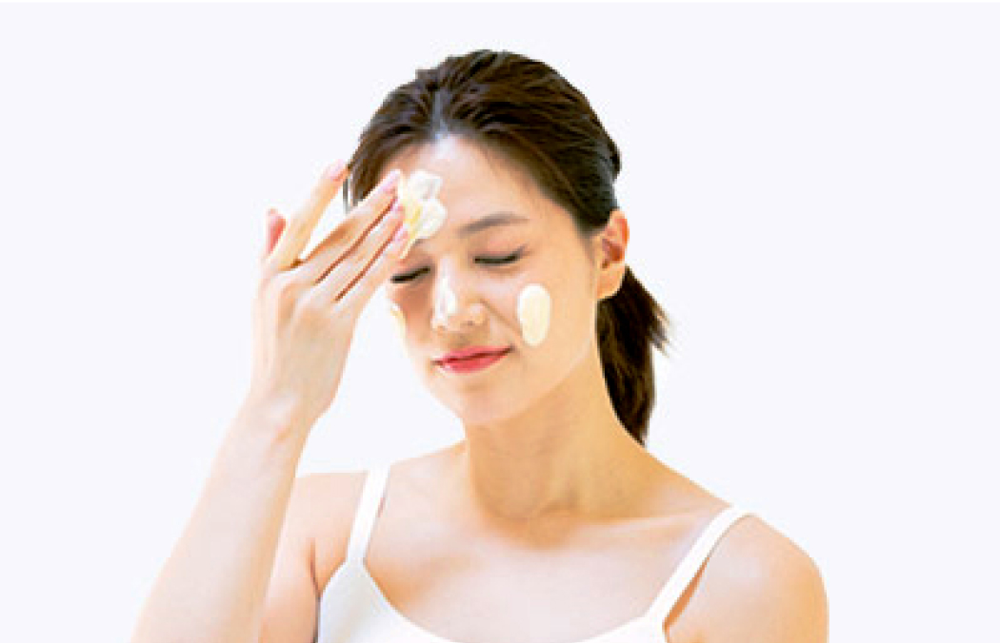
毛穴より小さいナノサイズの泡が汚れに密着！
POINT
STEP
3
ぬるま湯を少量加えて
白く乳化するまで馴染ませます
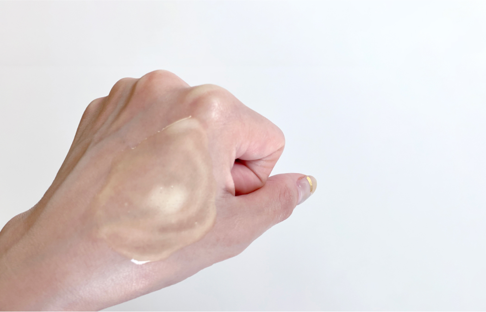
オイルがふわっと軽くなったら汚れ落ちのサイン。
POINT
STEP
4
ぬるま湯を手ですくったら
やさしくすすぎます。
顔を拭く時はタオルでゴシゴシは禁物です！
POINT
POINT
詳しい動画はこちらから
ナチュラルメイクタイプ
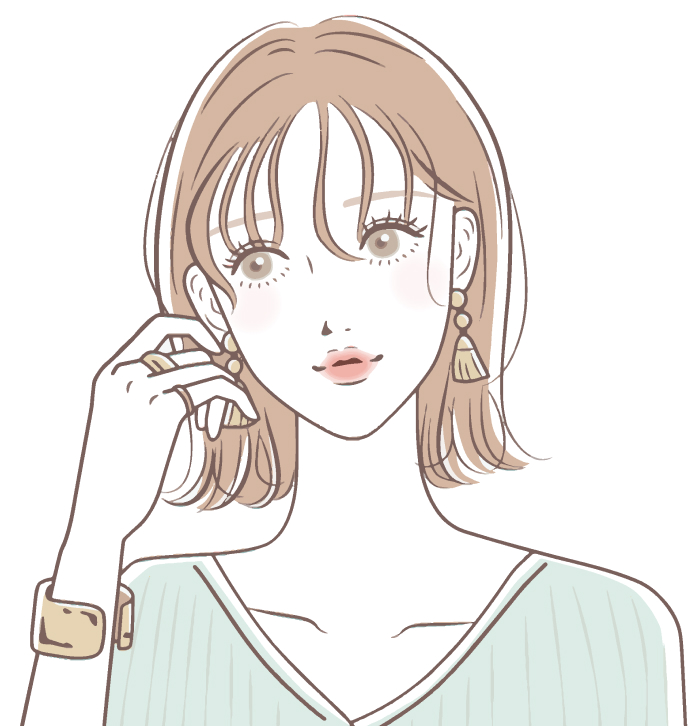
ナチュラルメイクなあなたは、
直径3cmの泡1つ分を目安に使うと
コスパ◎
使用コスメ
SPF値の低い日焼け止め、CCクリーム、BBクリーム、ミネラルファンデーション、パウダーファンデーション、お湯落ちタイプのファンデーションやアイライナー
適量：直径3cm
普段から薄づきのメイクや、お湯落ちタイプなどのコスメに切り替えたあなたは、
直径3cmの泡一つ分が適量です。
ゆっくり馴染ませしっかり乳化させることで、十分にメイクや汚れが落ちます。
120gサイズ1本を、直径3cmの泡玉1つ分（2～3g）ずつ使えば約1.5ヵ月持つので、コスパ良くご使用いただけます！
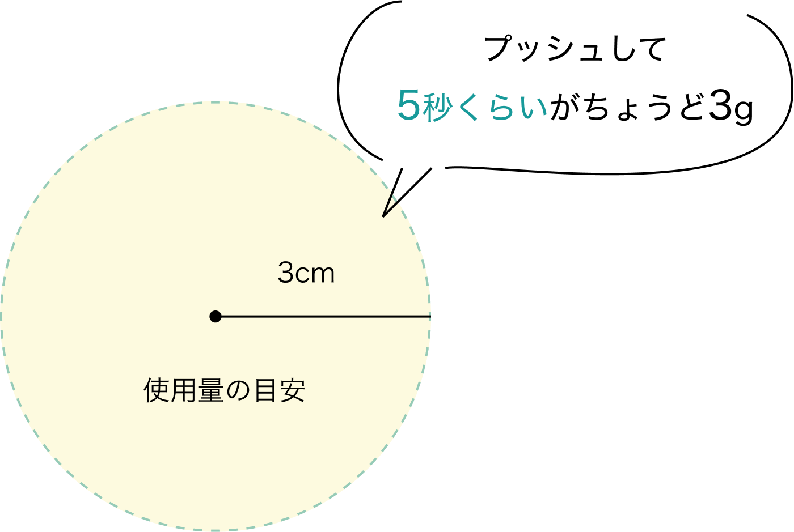
CHECK 確認ポイント
泡の量が少なすぎると肌への摩擦となり乾燥の原因となるので直径3cm(3g)ほどの量を推奨します。肌馴染みがよくないと感じたら追い泡オイルを♪
ハードメイクタイプ
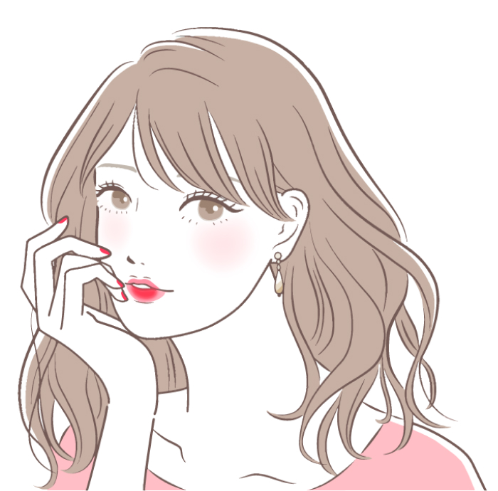
ハードメイクなあなたは、500円玉2つ分の分の泡が肌を傷つけない ベストな量。
使用コスメ
SPF値の高い日焼け止め、リキッドファンデーション、クリームファンデーション、ウォータープルーフタイプのファンデや日焼け止め、アイライナー、マスカラ、リップティント
適量：500円玉2個分
油分の多いファンデーションでベースメイクを仕上げていたり、ポイントメイクもしっかりめなあなたには、
2度洗いしない落とし方がおすすめ。
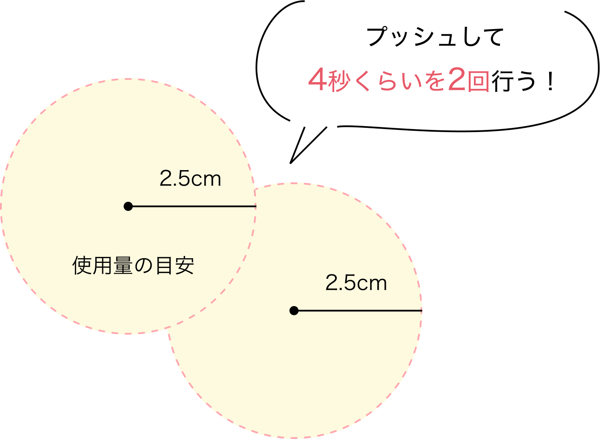
How to use
-
乾いた手に、500円玉2つ分(4g)のたっぷりな泡を出す。
-
30秒ほどかけてやさしく肌に馴染ませる。ゴシゴシは禁物です！
-
ぬるま湯を加え乳化。オイルが白く濁ったら汚れ落ちのサイン。
アイメイクパッチリタイプ
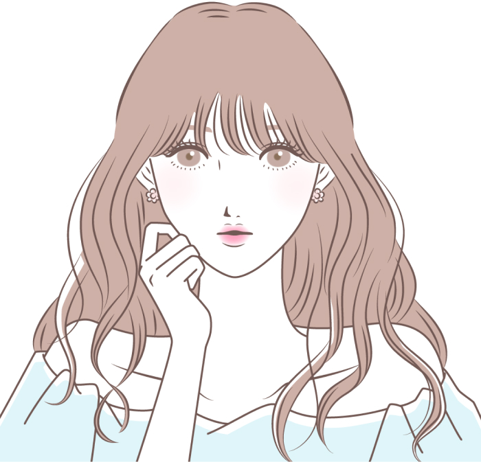
マスカラの落ちが悪い！
というあなたに。
ポイントの落とし方を伝授！
この3つが揃ったマスカラを使用中の方は必見！
- ウォータープルーフ
- 汗・皮脂・涙に強い
- 擦れに強い
マスカラが馴染むようにやさしく指の腹で押さえて、 毛流れに沿ってゆっくり滑らせ、乳化させます。 強力マスカラ使用の方は下記の集中ケアで落としましょう！
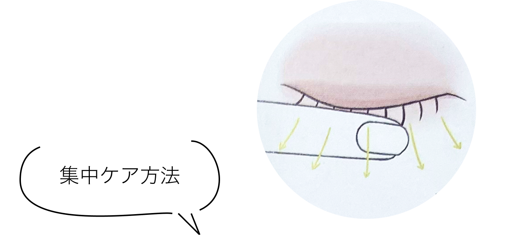
-
まつ毛に泡オイルを馴染ませます。
※片目ずつやりましょう！ -
オイルを含ませた 綿棒とコットンで挟むようにしてオフ
-
綿棒を使って根元や粘膜に残った汚れもきちんとオフ
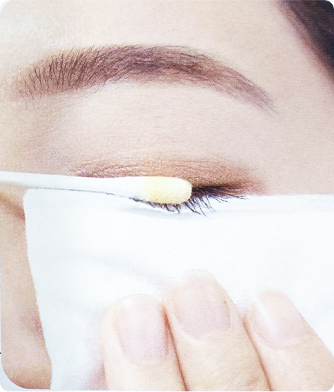
CHECK 確認ポイント
泡の量が少なすぎると肌への摩擦となり乾燥の原因となるので直径3cm(3g)ほどの量を推奨します。肌馴染みがよくないと感じたら追い泡オイルを♪
お悩み肌タイプ
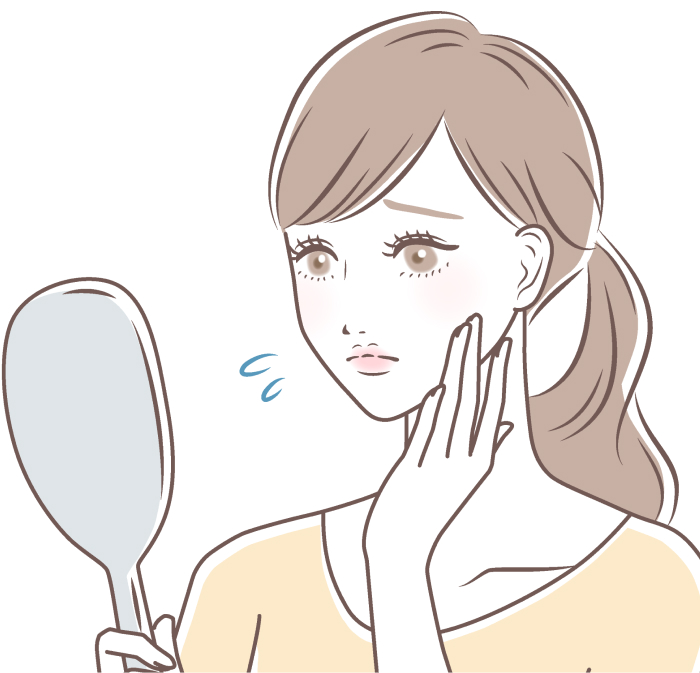
様々な肌悩みの方におすすめ！
朝クレンジングで
化粧ノリのよい肌へ
こんなお悩みの方におすすめ！
毛穴が気になる 肌が乾燥しやすい テカリ 黒ずみニキビ 汗をかきやすい 肌のベタつき
朝クレンジングのメリット
- トーンアップで明るい素肌へ！
- 肌が柔らかくなるから基礎化粧 品がよくなじみ、メイクのノリ が良い状態に！
実はオイリー肌の方も、乾燥が原因で皮脂が過剰に分泌されている可能性もあるので、朝クレンジングで理想の素肌を目指しましょう！
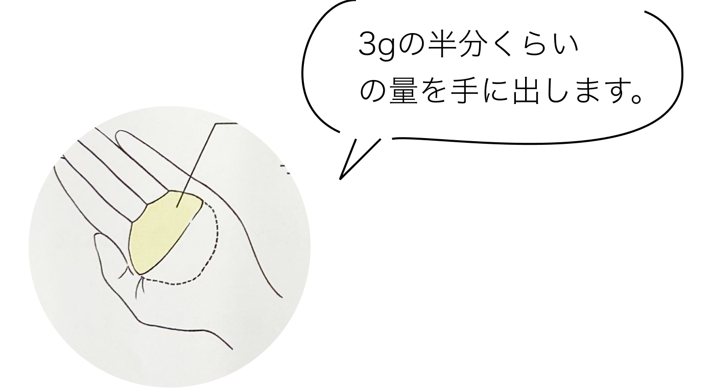
-
適量はメイクを落とすときの
半分ほどの量が◎寝ている間に分泌された皮脂や汗、夜につけた乳液や美容液の余分な油分を落とすためなので、強い洗浄力はいりません。
-
オイルをやさしく肌になじませてぬるま湯を加え乳化させ、洗い流します。
CHECK 朝クレンジングの使用頻度
毎日行なうと洗いすぎになり、余計に乾燥するなど肌の状態が悪化する可能性があります。 週に1～2回程を目安に行い、様子を見ながら続けてみてください。